A Progressive Web App that analyses BPM, energy, and pitch to detect musical emotion in real time.
Explore ProjectBuilt using HTML, CSS, and JavaScript as a Progressive Web App (PWA). It interprets musical features such as BPM, energy, and pitch to determine emotional output. These emotions can be visualised through dynamic colour changes and different visuals including, Bars, Wave, and Circular.
Analyses BPM, energy, and pitch to detect emotional states in real time.
You can customise how you want the app to look in settings under themes.
You can override emotions, click the smiley-face icon for the pop-up, you can then choose which mood suits your music and the visuals will display that colour.
You can use live listening on mobile version to avoid a quick detection.
You can upload MP3 files or wav files on desktop.
you can choose which visual you prefer from Bars, Wave and Circular display.
Information page gives you an insight into the app.
This is where you can change your visuals and your theme.
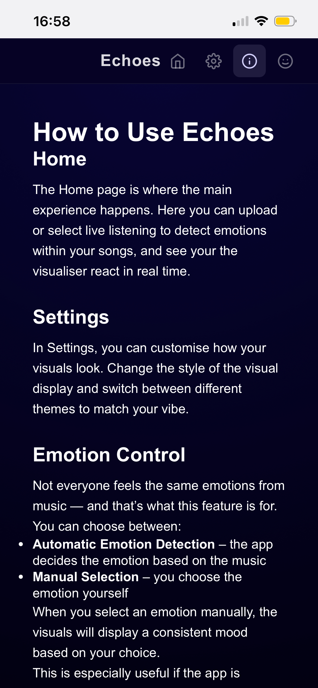
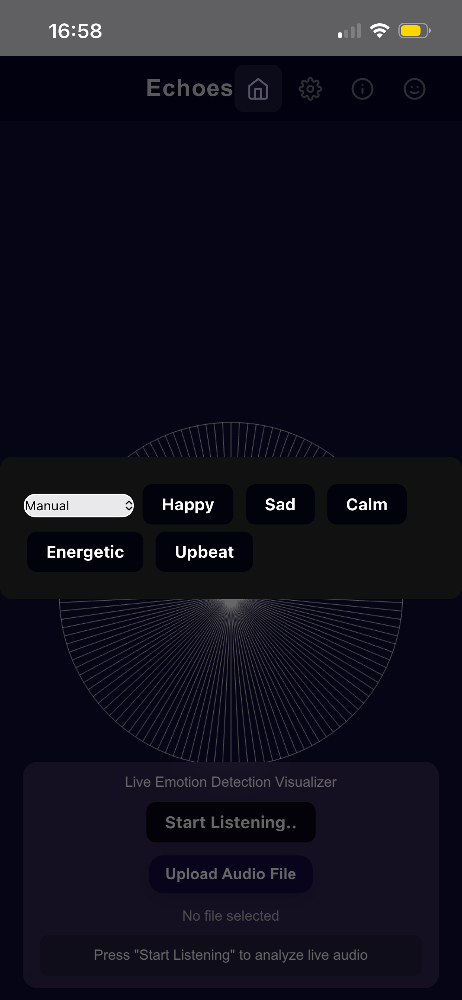
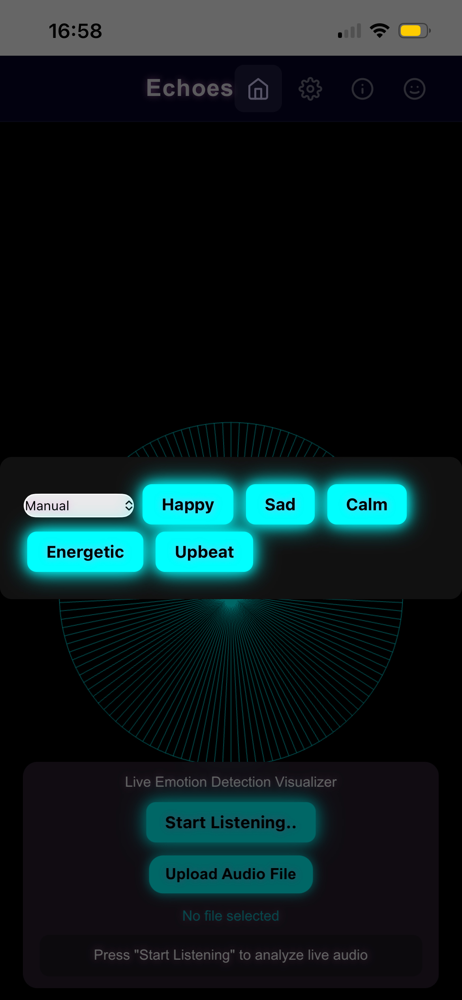
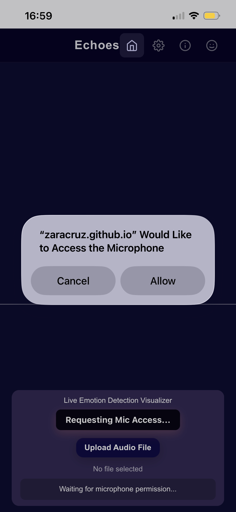
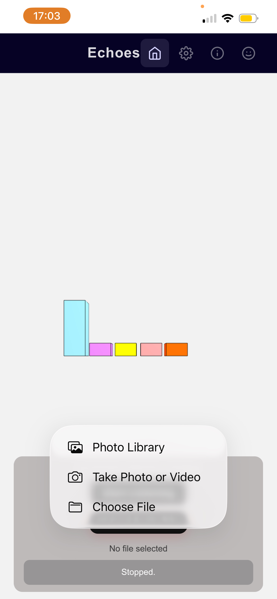
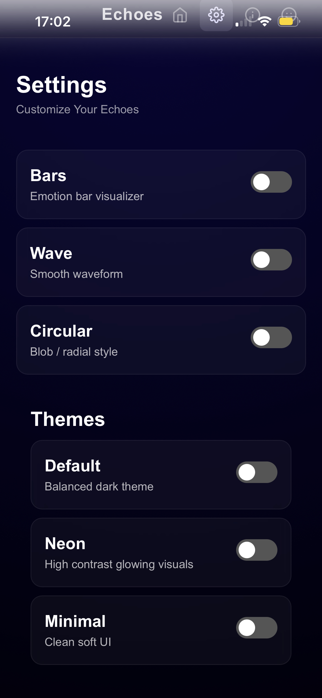
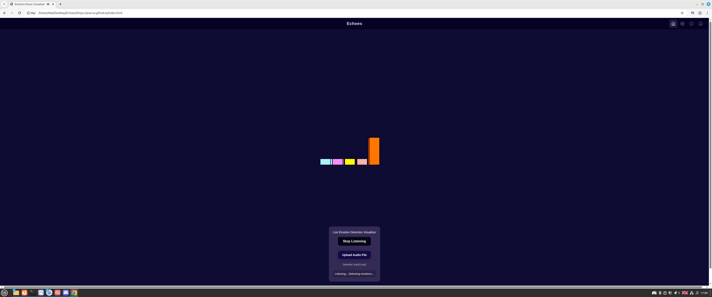
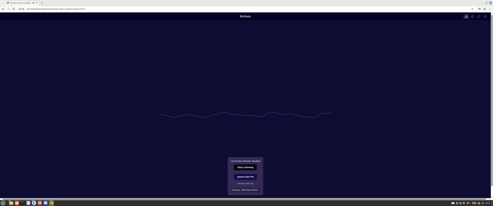
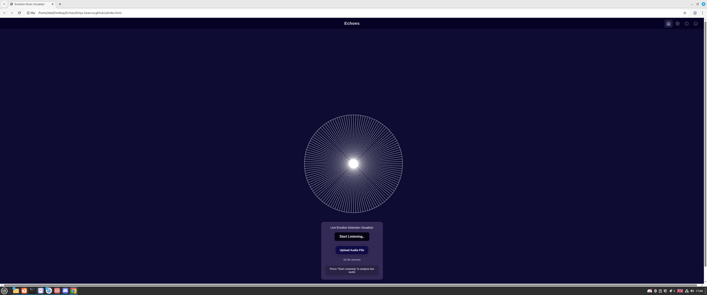
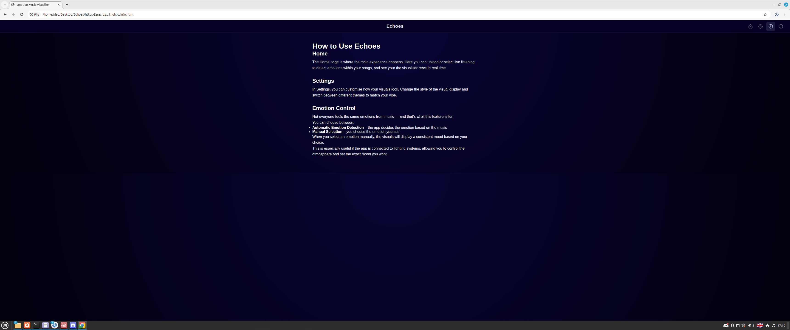
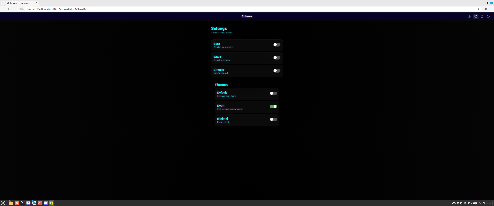
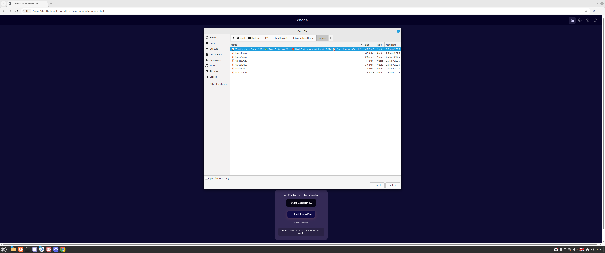
Designed for interactive music exploration and real-world LED integration.